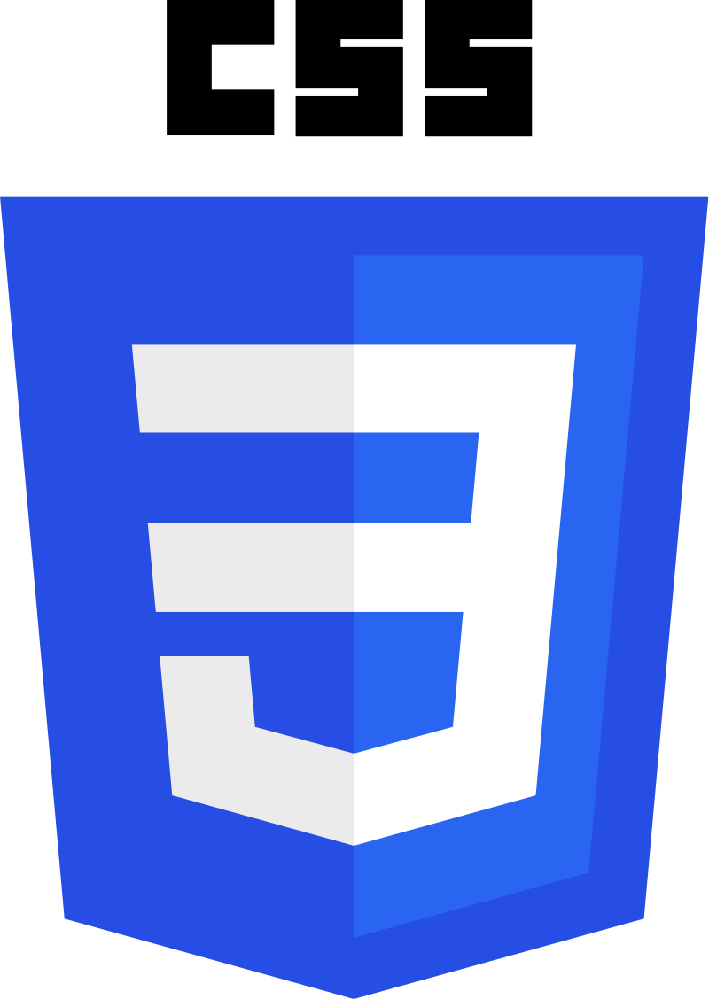
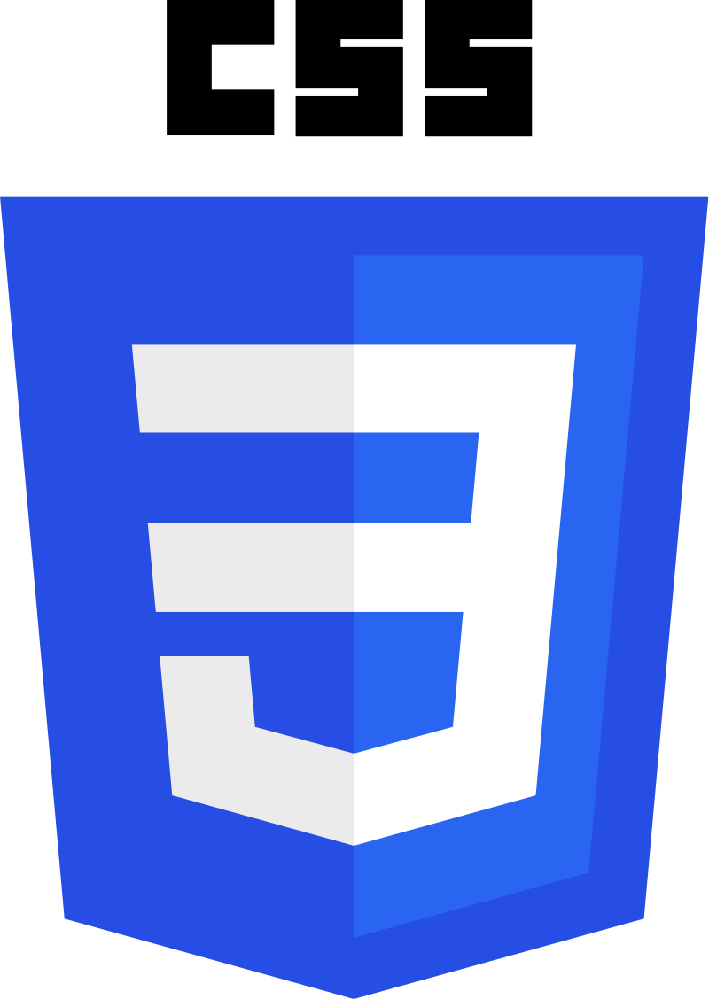

Óscar Rabadán
> Front-end Web Developer
Front-End Developer centrado en el framework React de Javascript con dominio en MongoDB, NodeJs, Express.js, TypeScript, SASS y HTML . Además de esto, estoy familiarizado con las librerías de Boostrap, Tailwind y, en menor medida, MaterialUI.
Me gusta mucho cuidar la User Experience (UX), así como prestar gran atención a los pequeños detalles, algo que puedes comprobar si echas un vistazo a mis repositorios.
Además del desarrollo web también me gusta el diseño gráfico, por lo que me manejo con soltura con el paquete de Adobe: Photoshop, Illustrator e Indesign.
En la actualidad continuo aprendiendo distintas tecnologías gracias a plataformas online como Platzi, Udemy, o Frontend Mentor.

MERN STACK


 
